Show the code
pacman::p_load(tidyverse, cluster, factoextra, fpc, treemap, ggplot2)
df <- read_csv("COFINFAD_LAB/data/cleaned_data.csv")The Clustering module segments customers into meaningful groups based on demographics, transaction behaviours, product usage, satisfaction, and location (city)-based patterns, enabling analysts to uncover how these factors shape financial behaviour in Colombia.
It provides an interactive environment where users can choose clustering type, variables, and number of cluster, and immediately visualize the resulting segments. It also displays cluster plots and quality metrics (AIC, BIC, likelihood ratio, entropy) to support evidence‑based selection of the “best” segmentation.
| Package | Purpose | Justification for Shiny/CRAN |
|---|---|---|
| tidyverse | Data manipulation | Essential for the reactive data flows in Shiny. |
| factoextra | Visualization | Best-in-class for PCA-based cluster plots and Elbow/Silhouette methods. |
| cluster | Clustering: clara() algorithm |
Critical: Unlike pam(), clara() is optimized for >40k rows, avoiding memory crashes. |
| fpc | Validation | Used to calculate Entropy and cluster stability. |
| treemap | Static Hierarchical View | Allows for a “nested” look at how behavioral clusters sit within Planning Regions/Locations. |
pacman::p_load(tidyverse, cluster, factoextra, fpc, treemap, ggplot2)
df <- read_csv("COFINFAD_LAB/data/cleaned_data.csv")Demographic segmentation uses CLARA (Clustering Large Applications), which is well-suited for mixed-type variables including categorical data such as gender, occupation, and marital status. CLARA works by repeatedly sampling subsets of the data and applying PAM (Partitioning Around Medoids) clustering, making it more robust to outliers than k-means.
Four plots are provided:
Cluster Plot — PCA projection of all customers coloured by cluster, showing how well-separated the demographic groups are in 2D space
Cluster Composition — proportion of customers in each cluster, helping assess whether the segmentation produces balanced or skewed groups
Cluster Evaluation — silhouette plot showing how well each customer fits their assigned cluster
Since CLARA is used, cluster quality is assessed using silhouette width (higher is better, max = 1) and entropy (lower is better).
demo_data <- df[, c("age", "gender", "occupation", "income_bracket", "education_level", "marital_status", "household_size")]
set.seed(123)
demo_res <- clara(demo_data, k = 4, samples = 50, pamLike = TRUE)
fviz_cluster(demo_res, geom = "point", pointsize = 1, main = "Demographic Segments") 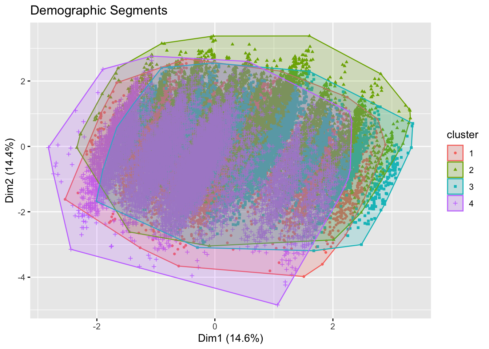
# Calculate Silhouette Width
avg_sil_demo <- demo_res$silinfo$avg.width
print(paste("Silhouette Width:",avg_sil_demo))[1] "Silhouette Width: 0.435409065193502"cluster_sizes <- table(demo_res$clustering)
cluster_df <- data.frame(
Cluster = names(cluster_sizes),
Count = as.numeric(cluster_sizes)
)
ggplot(cluster_df, aes(x = Cluster, y = Count, fill = Cluster)) +
geom_col() +
geom_text(aes(label = Count), vjust = -0.5) +
labs(title = "Cluster Composition (Demographic Segments)",
x = "Cluster",
y = "Number of Customers") +
theme_minimal() +
theme(legend.position = "none")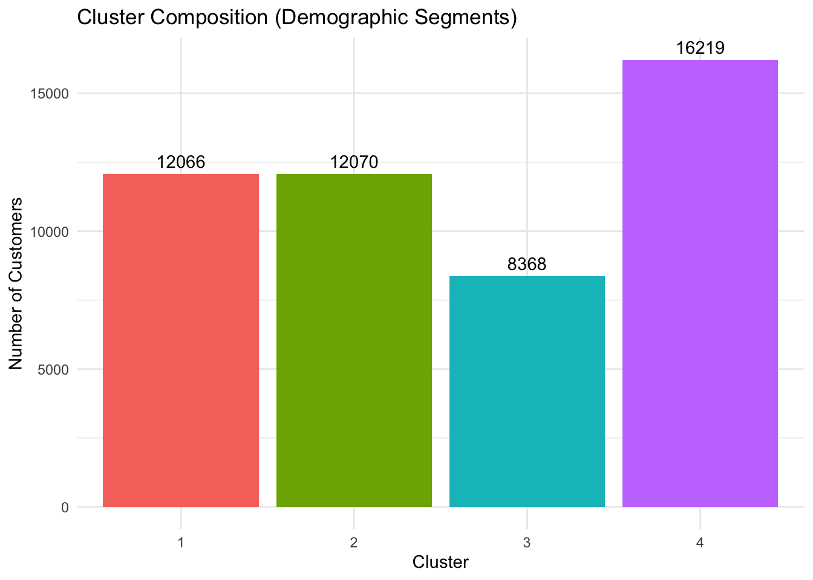
sil <- silhouette(demo_res)
library(factoextra)
fviz_silhouette(sil,
main = "Silhouette Plot") +
theme_minimal() cluster size ave.sil.width
1 1 11 0.42
2 2 10 0.40
3 3 8 0.56
4 4 19 0.41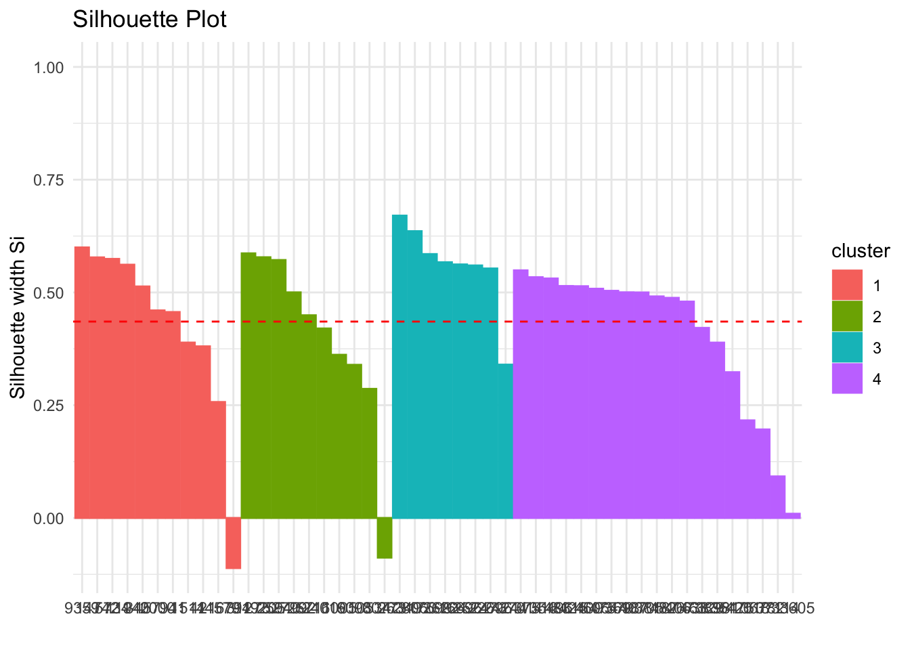
Transactional segmentation uses k-means clustering on six standardised numerical variables: transaction count, average transaction value, total transaction volume, average daily transactions, weekend transaction ratio, and international transactions. All variables are scaled prior to clustering to ensure no single variable dominates due to differences in magnitude.
Five plots are provided:
Cluster Plot — PCA projection showing cluster separation across transaction dimensions
Cluster Composition — proportion of customers per cluster, highlighting dominant and niche segments
Elbow Plot — shows total within-cluster sum of squares (WSS) across k=1 to 10, helping identify the optimal number of clusters
Silhouette Plot — evaluates how well each customer fits their assigned cluster
All three metrics are available: silhouette width, entropy, and AIC/BIC. AIC and BIC penalise model complexity — lower values indicate a better balance between fit and the number of clusters chosen.
trans_vars <- c("tx_count", "avg_tx_value", "total_tx_volume", "avg_daily_transactions",
"weekend_transaction_ratio", "international_transactions")
trans_data <- na.omit(df[, trans_vars])
trans_scaled <- scale(trans_data)
set.seed(123)
trans_km <- kmeans(trans_scaled, centers = 5, nstart = 25)
fviz_cluster(trans_km, data = trans_scaled, ellipse.type = "norm", main = "Behavioral Segments") 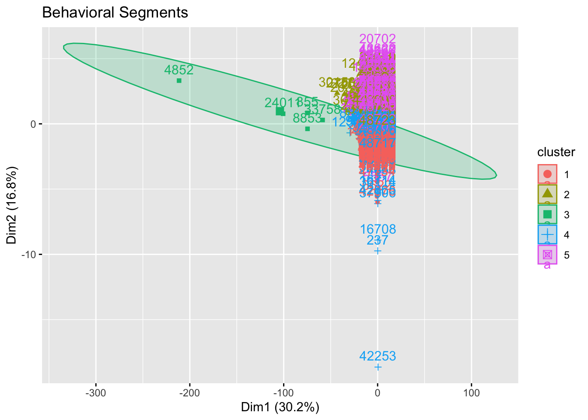
# Calculating AIC, BIC, Entropy, and Silhouette Width
k_trans <- nrow(trans_km$centers)
n_trans <- nrow(trans_scaled)
aic_trans <- trans_km$tot.withinss + 2 * k_trans * ncol(trans_scaled)
bic_trans <- trans_km$tot.withinss + log(n_trans) * k_trans * ncol(trans_scaled)
print(paste("AIC:", aic_trans, " | ", "BIC:", bic_trans))[1] "AIC: 147455.984177087 | BIC: 147719.801371392"cluster_sizes <- data.frame(
Cluster = factor(trans_km$cluster),
Count = 1
)
cluster_sizes <- aggregate(Count ~ Cluster, cluster_sizes, sum)
# Bar plot of cluster proportions
ggplot(cluster_sizes, aes(x = Cluster, y = Count, fill = Cluster)) +
geom_col() +
geom_text(aes(label = Count), vjust = -0.5) +
labs(title = "Cluster Composition",
x = "Cluster",
y = "Number of Customers") +
theme_minimal() +
theme(legend.position = "none")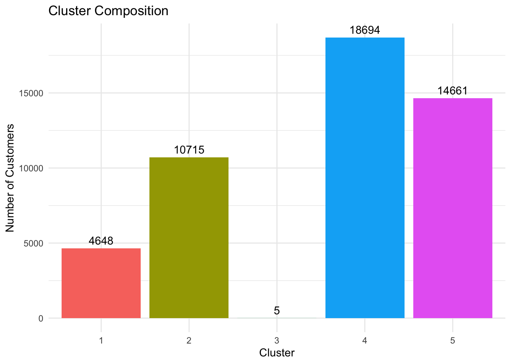
# Elbow plot for k = 1 to 10
k.max <- 10
k.values <- 1:k.max
wss <- sapply(k.values, function(k) {
kmeans(trans_scaled, centers = k, nstart = 25)$tot.withinss
})
elbow_df <- data.frame(k = k.values, wss = wss)
ggplot(elbow_df, aes(x = k, y = wss)) +
geom_line(linewidth = 1) +
geom_point() +
scale_x_continuous(breaks = k.values) +
labs(title = "Elbow Plot: Optimal k for Transaction Clusters",
x = "Number of clusters (k)",
y = "Within‑cluster Sum of Squares (WSS)") +
theme_minimal()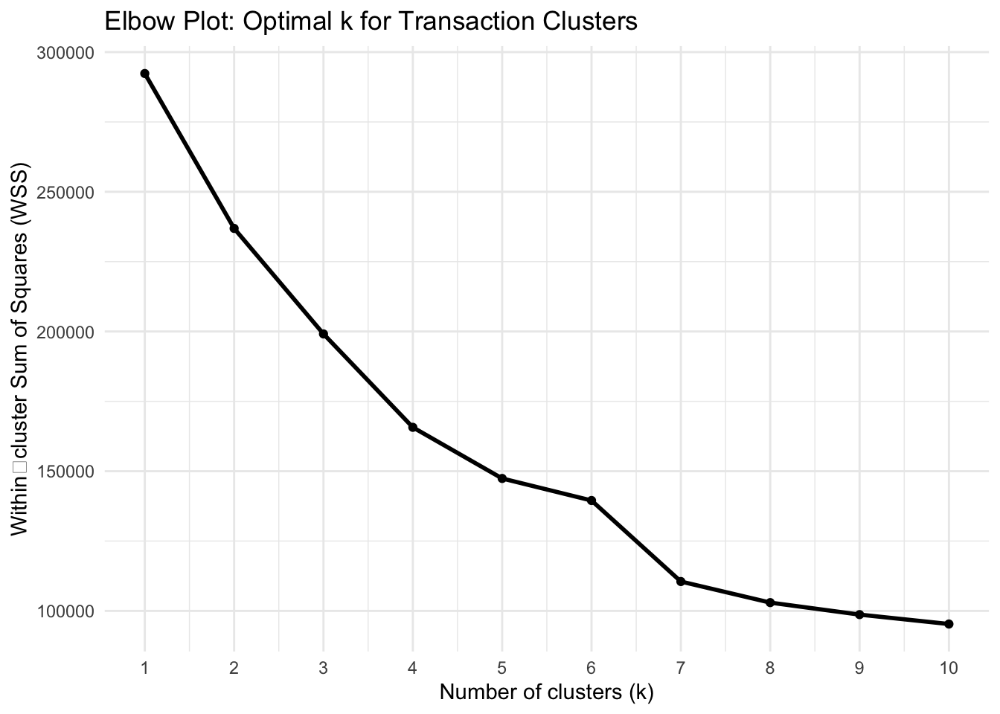
# Silhouette analysis for k = 3
d <- dist(trans_scaled)
sil <- silhouette(trans_km$cluster, d)
# Silhouette plot
fviz_silhouette(sil,
main = "Silhouette Plot") +
theme_minimal() cluster size ave.sil.width
1 1 4648 0.36
2 2 10715 0.28
3 3 5 0.33
4 4 18694 0.42
5 5 14661 0.27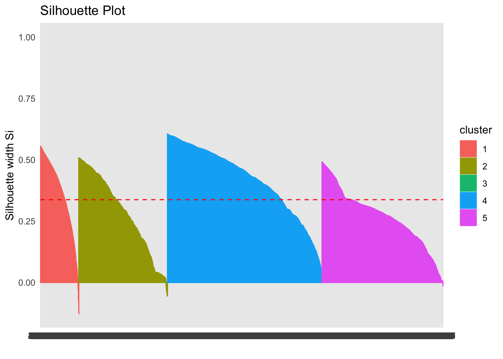
Product usage segmentation uses CLARA clustering on five variables capturing digital engagement: active products, app login frequency, feature usage diversity, bill payment usage, and auto savings enabled. CLARA is chosen here due to the presence of binary variables (bill_payment_user, auto_savings_enabled) which are not well-suited to k-means distance calculations.
Four plots are provided:
Cluster Plot — PCA projection of usage patterns coloured by cluster
Cluster Composition — distribution of customers across clusters
Cluster Evaluation — silhouette plot assessing cluster cohesion
AIC/BIC are shown as N/A since CLARA is used. This segmentation produces the strongest cluster structure of all four dimensions (silhouette = 0.50), suggesting that digital engagement patterns are the most reliable basis for customer differentiation.
usage_vars <- c("active_products", "app_logins_frequency", "feature_usage_diversity",
"bill_payment_user", "auto_savings_enabled", "insurance_product",
"credit_card", "personal_loan", "savings_account", "investment_account")
usage_data <- df[, usage_vars]
usage_data[] <- lapply(usage_data, as.factor)
set.seed(123)
usage_res <- clara(usage_data, k = 3, samples = 50)
fviz_cluster(usage_res, geom = "point", main = "Product Usage Segments") 
# Calculate Silhouette Width
avg_sil_usage <- usage_res$silinfo$avg.width
print(paste("Silhouette width:", avg_sil_usage)) [1] "Silhouette width: 0.223089185296088"cluster_sizes <- table(usage_res$clustering)
cluster_df <- data.frame(
Cluster = names(cluster_sizes),
Count = as.numeric(cluster_sizes)
)
ggplot(cluster_df, aes(x = Cluster, y = Count, fill = Cluster)) +
geom_col() +
geom_text(aes(label = Count), vjust = -0.5) +
labs(title = "Cluster Composition (Demographic Segments)",
x = "Cluster",
y = "Number of Customers") +
theme_minimal() +
theme(legend.position = "none")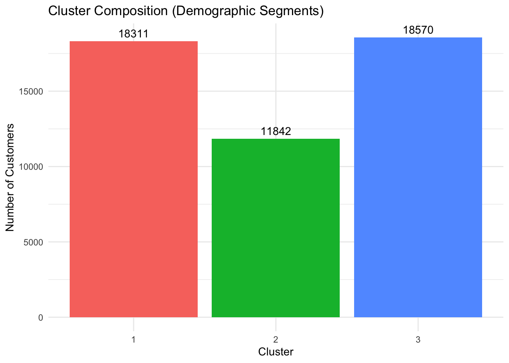
sil <- silhouette(usage_res)
library(factoextra)
fviz_silhouette(sil,
main = "Silhouette Plot") +
theme_minimal() cluster size ave.sil.width
1 1 19 0.18
2 2 8 0.40
3 3 19 0.19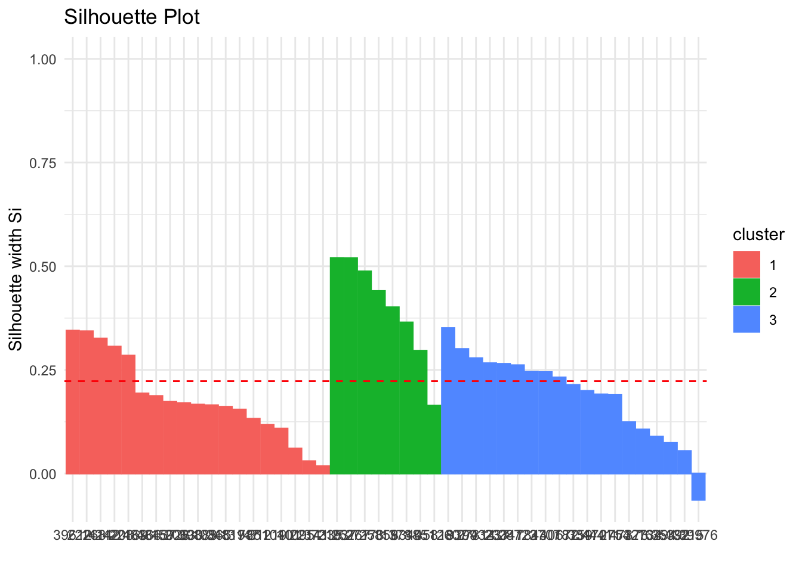
Satisfaction segmentation uses k-means clustering on five standardised satisfaction variables: overall satisfaction score, base satisfaction, transaction satisfaction, product satisfaction, and app store rating. Variables are scaled prior to clustering.
Five plots are provided:
Cluster Plot — PCA projection showing how satisfaction profiles separate in 2D space
Cluster Composition — proportion of customers per cluster
Elbow Plot — helps determine the optimal k; a gradual curve with no clear elbow suggests satisfaction data lacks strong natural cluster structure
Silhouette Plot — evaluates cluster fit for each customer
All three metrics are available. This segmentation produces the weakest structure (silhouette = 0.21), indicating that customers tend to rate satisfaction dimensions similarly regardless of their segment. A lower k (k=2 or k=3) may yield more interpretable results for this dimension.
sat_vars <- c("satisfaction_score", "base_satisfaction", "tx_satisfaction", "product_satisfaction", "app_store_rating")
sat_data <- df[, sat_vars]
sat_scaled <- scale(na.omit(sat_data))
set.seed(123)
sat_km <- kmeans(sat_scaled, centers = 3, nstart = 25)
fviz_cluster(sat_km, data = sat_scaled, main = "Satisfaction Segments")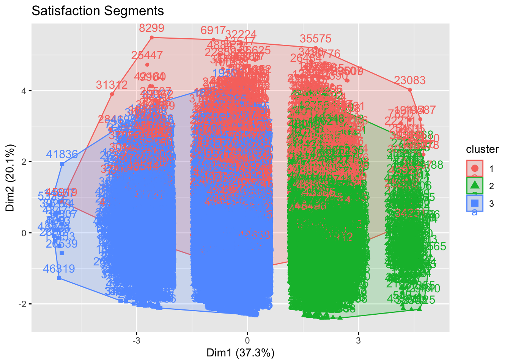
k_sat <- nrow(sat_km$centers)
n_sat <- nrow(sat_scaled)
aic_sat <- sat_km$tot.withinss + 2 * k_sat * ncol(sat_scaled)
bic_sat <- sat_km$tot.withinss + log(n_sat) * k_sat * ncol(sat_scaled)
avg_sil_sat <- sat_km$silinfo$avg.width
print(paste("AIC:", aic_sat, " | ", "BIC:", bic_sat))[1] "AIC: 148405.038866896 | BIC: 148536.947464049"cluster_sizes <- data.frame(
Cluster = factor(sat_km$cluster),
Count = 1
)
cluster_sizes <- aggregate(Count ~ Cluster, cluster_sizes, sum)
# Bar plot of cluster proportions
ggplot(cluster_sizes, aes(x = Cluster, y = Count, fill = Cluster)) +
geom_col() +
geom_text(aes(label = Count), vjust = -0.5) +
labs(title = "Cluster Composition",
x = "Cluster",
y = "Number of Customers") +
theme_minimal() +
theme(legend.position = "none")
# Elbow plot for k = 1 to 10
k.max <- 10
k.values <- 1:k.max
wss <- sapply(k.values, function(k) {
kmeans(sat_scaled, centers = k, nstart = 25)$tot.withinss
})
elbow_df <- data.frame(k = k.values, wss = wss)
ggplot(elbow_df, aes(x = k, y = wss)) +
geom_line(linewidth = 1) +
geom_point() +
scale_x_continuous(breaks = k.values) +
labs(title = "Elbow Plot: Optimal k for Satisfaction Clusters",
x = "Number of clusters (k)",
y = "Within‑cluster Sum of Squares (WSS)") +
theme_minimal()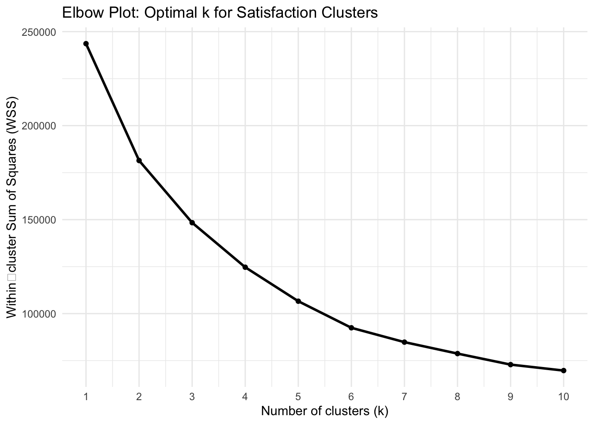
# Silhouette analysis for k = 3
d <- dist(sat_scaled)
sil <- silhouette(sat_km$cluster, d)
# Silhouette plot
fviz_silhouette(sil,
main = "Silhouette Plot: Satisfaction Clusters") +
theme_minimal() cluster size ave.sil.width
1 1 3734 0.29
2 2 11130 0.39
3 3 33859 0.32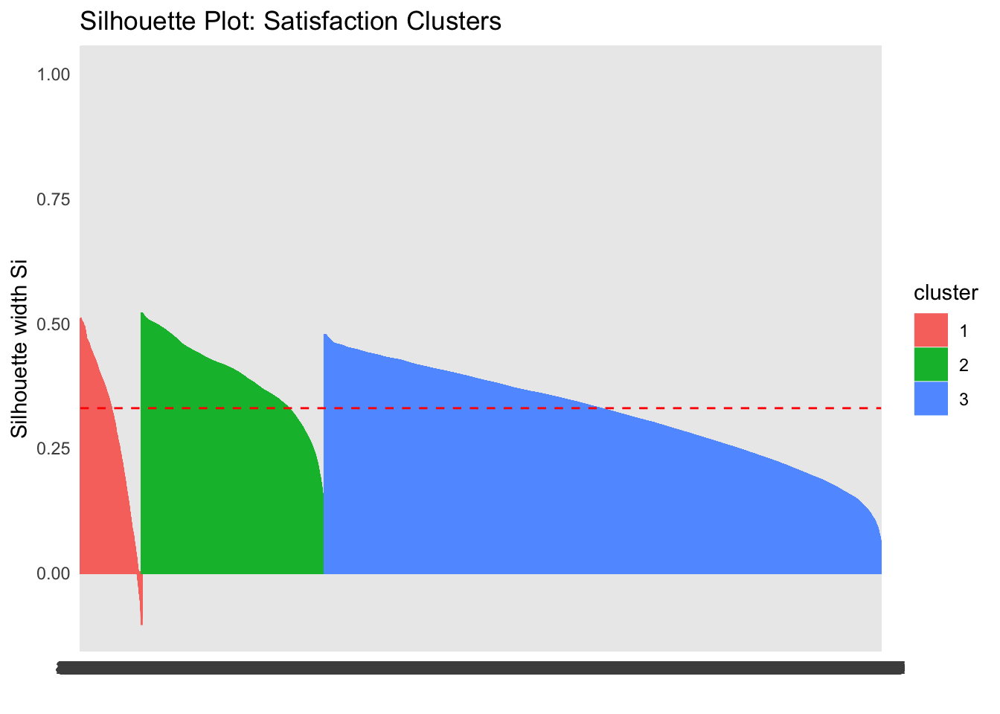
To obtain the clusters for Location-based Transaction behaviour, K-means + Treemap is used.
Purely numeric features: Transaction volume/counts/login frequency work perfectly with Euclidean distance (no categorical variables like demographics).
Scalability: Handles 48k rows efficiently for real-time Shiny reactivity.
Interpretable segments: Produces clean behavioral groups (high-spenders, frequent users, etc.) before geographic mapping.
Geographic discovery: Treemaps excel at showing hierarchical patterns—e.g., “Young Digital” customers dominate Bogotá while “High-Value Seniors” concentrate in Medellín.
No dendrogram needed: Unlike pure hierarchical clustering of cities, this reveals customer distribution patterns across locations rather than city-to-city similarity.
cluster_data <- df %>%
select(customer_id, total_tx_volume, tx_count, app_logins_frequency) %>%
drop_na() %>%
mutate(across(-customer_id, scale))
set.seed(123)
kmeans_result <- kmeans(cluster_data[,-1], centers = 4) #input$k_clusters
cluster_data$segment_id <- as.factor(kmeans_result$cluster)
final_df <- df %>%
inner_join(select(cluster_data, customer_id, segment_id), by = "customer_id")
segment_summary <- final_df %>%
group_by(segment_id) %>%
summarise(
avg_age = round(mean(age, na.rm = TRUE), 1),
# Finding the most frequent income bracket
top_income = names(sort(table(income_bracket), decreasing = TRUE))[1],
avg_vol = round(mean(total_tx_volume, na.rm = TRUE), 0)
) %>%
mutate(persona = case_when(
segment_id == 1 ~ "Young Digital",
segment_id == 2 ~ "Affluent Professional",
segment_id == 3 ~ "Mass Market",
segment_id == 4 ~ "High-Value Senior",
TRUE ~ as.character(segment_id)
))
tree_prep_labeled <- final_df %>%
group_by(location, segment_id) %>%
summarise(total_vol = sum(total_tx_volume, na.rm = TRUE), .groups = 'drop') %>%
left_join(segment_summary, by = "segment_id") %>%
mutate(label_text = paste0(persona, "\nAvg Age: ", avg_age))
treemap(tree_prep_labeled,
index = c("location", "label_text"),
vSize = "total_vol",
vColor = "location",
type = "index",
title = "Geographic Segments by Persona & Age (CONFIFAD)",
palette = "Set3",
fontsize.labels = c(15, 8),
fontcolor.labels = c("black", "darkslategrey"),
border.col = c("black", "white"),
border.lwds = c(4, 1),
align.labels = list(c("center", "center"), c("left", "top"))) #output$treemap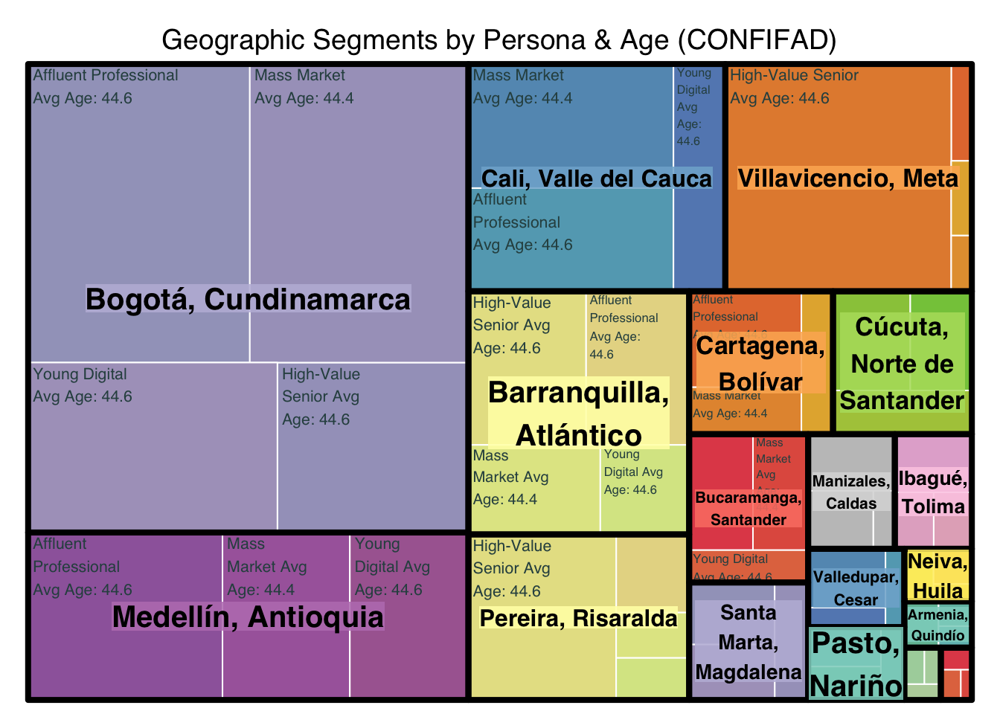